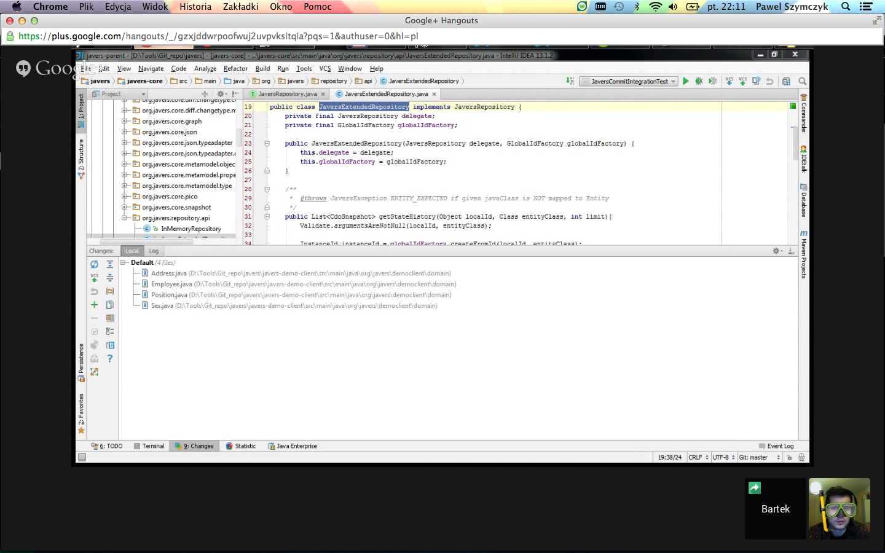
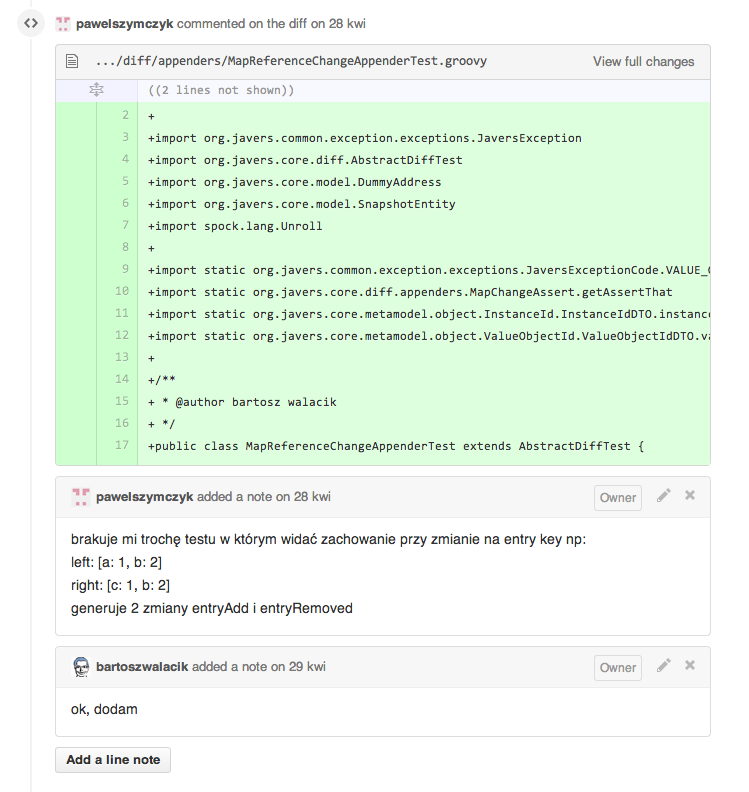

Paweł Szymczyk
Bartosz Walacik
javers.orgjavers project
- Open source library
- Technology agnostic
- Based on Reflection & JSON
https://github.com/javers/javersjavers.orgcompile 'org.javers:javers-core:0.7.0'
What Javers can do for you?
- Find diff between two graphs of objects
- Data audit
Show time!
git clone https://github.com/javers/javers-demo.git
gradlew bootRun
Javers Domain
Commit
package org.javers.core.commit
...
public final class Commit {
private final CommitId id;
private final List<CdoSnapshot> snapshots;
private final String author;
private final LocalDateTime commitDate;
private final Diff diff;
...
}
Snapshot
package org.javers.core.metamodel.object;
...
public final class CdoSnapshot extends Cdo {
private CommitId commitId;
private final Map<Property, Object> state;
...
}
Diff
package org.javers.core.diff;
...
public class Diff implements Visitable<ChangeVisitor>{
private final List<Change> changes;
...
}
Change
package org.javers.core.diff;
...
public abstract class Change implements Visitable<ChangeVisitor> {
private final GlobalCdoId affectedCdoId;
private transient Optional<Object> affectedCdo;
...
}
Client model mapping
User classes are mapped to:
EntityValueObjectValue
Java types are mapped to:
PrimitiveValue(exBigDecimal)Array, Set, List, Map
Looking for early adopters

Looking for contributors
Javers needs you!

Profits for contributors
- Knowledge sharing
- Build your
Karma - No UI, no servers, no deployments
- We choose technology stack:
Spock, Groovy, Pico, Gson, Gradle, MongoDB
Javers Team

How do we work?
BDD
def "should append newObjects to diff"() {
given:
def left = buildLiveGraph(dummyUser().withName("1")
.build())
def right = buildLiveGraph(dummyUser().withName("1").withDetails(5)
.build())
when:
def changes = new NewObjectAppender()
.getChangeSet(new GraphPair(left, right))
then:
changes.size() == 1
assertThat(changes[0]).isNewObject()
}Pair programming via hangouts
Code review
About project
- Src in Java 7
- Tests in Spock, Groovy
- 11 kloc src
- 8 klock test
- 420 BDD tests
- 87% coverage
Dziękujemy za uwagę!
Q & A ...
Contact us
| Paweł Szymczyk | javers.org | @p_szymczyk |
| Bartosz Walacik | javers.org | @BartoszWalacik |
http://github.com/javers/wjug-talk